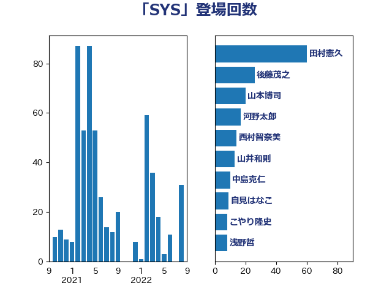

単語「SYS」

| 田村憲久 | 自由民主党 | 60 回 |
| 後藤茂之 | 自由民主党 | 26 回 |
| 山本博司 | 公明党 | 20 回 |
| 河野太郎 | 自由民主党 | 17 回 |
| 西村智奈美 | 立憲民主党 | 14 回 |
| 山井和則 | 立憲民主党 | 13 回 |
| 中島克仁 | 立憲民主党 | 10 回 |
| 自見はなこ | 自由民主党 | 9 回 |
| こやり隆史 | 自由民主党 | 8 回 |
| 浅野哲 | 国民民主党 | 8 回 |
| 田島麻衣子 | 立憲民主党 | 8 回 |
| 西村康稔 | 自由民主党 | 8 回 |
| 白石洋一 | 立憲民主党 | 7 回 |
| 打越さく良 | 立憲民主党 | 6 回 |
| 足立康史 | 日本維新の会 | 6 回 |
| 谷川とむ | 自由民主党 | 5 回 |
| 長妻昭 | 立憲民主党 | 5 回 |
| 高木かおり | 日本維新の会 | 5 回 |
| 仁木博文 | 無所属 | 4 回 |
| 佐藤英道 | 公明党 | 4 回 |
| 平木大作 | 公明党 | 4 回 |
| 漆間譲司 | 日本維新の会 | 4 回 |
| 片山大介 | 日本維新の会 | 4 回 |
| 田中健 | 国民民主党 | 4 回 |
| 福島みずほ | 社会民主党 | 4 回 |
| 加藤勝信 | 自由民主党 | 3 回 |
| 吉川元 | 立憲民主党 | 3 回 |
| 宮本岳志 | 日本共産党 | 3 回 |
| 小寺裕雄 | 自由民主党 | 3 回 |
| 山際大志郎 | 自由民主党 | 3 回 |
| 川田龍平 | 立憲民主党 | 3 回 |
| 東徹 | 日本維新の会 | 3 回 |
| 柴田巧 | 日本維新の会 | 3 回 |
| 浅田均 | 日本維新の会 | 3 回 |
| 源馬謙太郎 | 立憲民主党 | 3 回 |
| 熊野正士 | 公明党 | 3 回 |
| 田村智子 | 日本共産党 | 3 回 |
| 矢倉克夫 | 公明党 | 3 回 |
| 石橋通宏 | 立憲民主党 | 3 回 |
| 中谷一馬 | 立憲民主党 | 2 回 |
| 伊藤孝恵 | 国民民主党 | 2 回 |
| 倉林明子 | 日本共産党 | 2 回 |
| 塩川鉄也 | 日本共産党 | 2 回 |
| 岸真紀子 | 立憲民主党 | 2 回 |
| 後藤祐一 | 立憲民主党 | 2 回 |
| 浜田聡 | NHK党 | 2 回 |
| 清水貴之 | 日本維新の会 | 2 回 |
| 田村まみ | 国民民主党 | 2 回 |
| 舟山康江 | 国民民主党 | 2 回 |
| 逢沢一郎 | 自由民主党 | 2 回 |
| 中西祐介 | 自由民主党 | 1 回 |
| 伊佐進一 | 公明党 | 1 回 |
| 伊藤俊輔 | 立憲民主党 | 1 回 |
| 古賀之士 | 立憲民主党 | 1 回 |
| 吉田統彦 | 立憲民主党 | 1 回 |
| 坂井学 | 自由民主党 | 1 回 |
| 堀場幸子 | 日本維新の会 | 1 回 |
| 塩田博昭 | 公明党 | 1 回 |
| 大西健介 | 立憲民主党 | 1 回 |
| 小野田紀美 | 自由民主党 | 1 回 |
| 山本香苗 | 公明党 | 1 回 |
| 山田美樹 | 自由民主党 | 1 回 |
| 岩屋毅 | 自由民主党 | 1 回 |
| 平井卓也 | 自由民主党 | 1 回 |
| 平将明 | 自由民主党 | 1 回 |
| 梅村聡 | 日本維新の会 | 1 回 |
| 森田俊和 | 立憲民主党 | 1 回 |
| 池下卓 | 日本維新の会 | 1 回 |
| 熊谷裕人 | 立憲民主党 | 1 回 |
| 田嶋要 | 立憲民主党 | 1 回 |
| 石垣のりこ | 立憲民主党 | 1 回 |
| 石川博崇 | 公明党 | 1 回 |
| 竹内譲 | 公明党 | 1 回 |
| 長谷川淳二 | 自由民主党 | 1 回 |